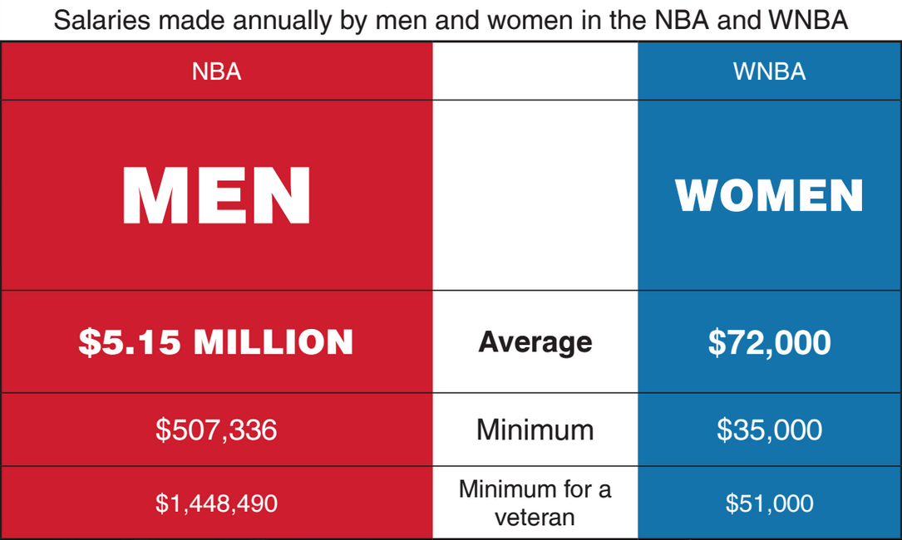

There are a lot of issues within sports, and the sport I will be talking about today is Professional Basketball (nba/wnba). Theres different issues as far as racism to sexism to favoritism and more. The two topics I will focus on are Sexism and I will cover how the WNBA is treated verses the NBA and the terrible differences and Racism and that will kinda cover what goes on behind doors and the racism a lot of Black players face within playing that game.
With sports there is more then just having to be good you go through repercussions that you wouldn't expect to go through. When I say that I mean as far as racism or sexism because you would think we are in the 21st century and we are still going on with issues from hundreds of years ok, yes, yes is the short answer.
I will show a couple pictures right now then will go indept of the discrimination against players either because of their skin or gender. which is so sad because the society really hasn't gotten better.

The picture showed above isnit even a little bit of the sexism showed by the creators of the WNBA. If you would like to read more keep reading and press either "racism" or "sexism" to hear about one of the two issue.